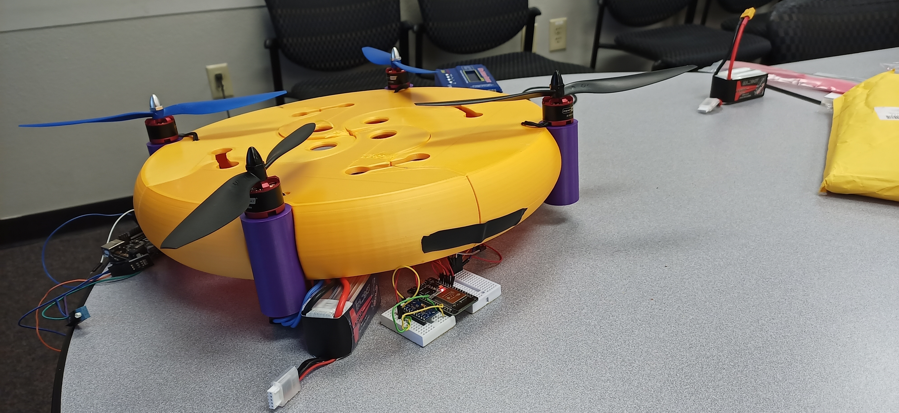
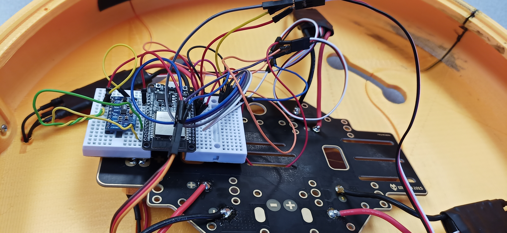

UAT-01: The Flying Cheese Wheel

Thank you for your interestin a Flying Cheese Wheel drone. Its unique design makes it a desireable purchase.
Features include:
- 4 High Speed Brushless Motors
- Wi Fi Controls over Websockets
- Auto Leveling
- PLA and Wood Construction
- UMC 6050 Gyro
- ESP 32 Wroom 32 Flight Controller
- Battery
- API Expandable to IOT
- Unique Design
- Roomy Interior Leaves Room for Future Add Ons, Such As GPS or A Claw
Lessons Learned from Development:
- Making a drone from scratch is a very involved process.
- ESP 32-Only drone is very doable, but developing a drone from code made for another microcontroller is tough.
- Making something controlled via JSON messages over websockets can be very difficult if you do not know what you are doing.
- Even the basic control scheme was tough to explain to classmates that have no experience in this.
- PID controllers are a subset of control theory, which is a subset of differential equations.
- ESP32s have something called SPIFFS which allows you to have a filesystem on the device, which is probably why it looks like an FTP server.
- Trying to do CAD work in Blender takes A LOT of practice, even if it is a useful skill to understand precision modeling in Blender.
- I still have a bad habbit of wanting to do everything the hard way.
- Wifi drone controls opens up all sorts of interesting possibilities
- Hobbyists tend to do this kind of thing with this kind of controller with LoRa instead of WiFi
- There is a wealth of knowledge to be had in trying to develop a drone. I A LOT about the ESP32.
- I am probably going to continue to work on this project because building a drone from scratch is actully pretty cool.
